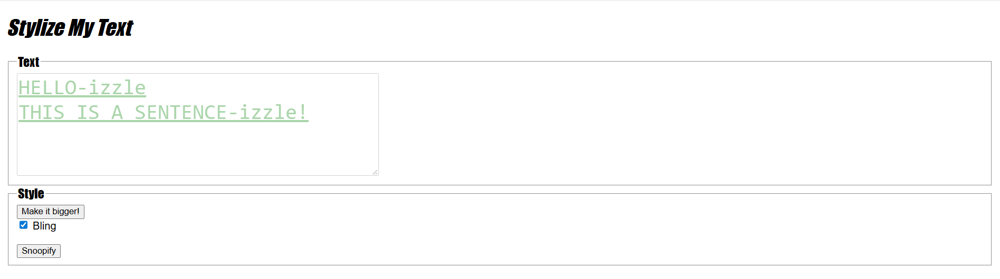

original lab idea and code by Victoria Kirst and Kevin Wallace; revised by Brian Le and Marty Stepp; revised to work with modern browsers by John Ultra
Credits and Acknowledgements This laboratory activity was taken from Companion Website for Web Programming Step by Step by Marty Stepp, Jessica Miller, and Victoria Kirst. These materials are used in this course for educational purposes only. If you are keen, the complete list of materials can be found in the following URL: https://www.webstepbook.com/. The copyright to these materials are owned by their respective owners.
The purpose of this lab is to practice using basic JavaScript and UI controls to create interactive web pages.
The theme of this lab is that we'll be writing a page where the user can type some text into a box, and by clicking on various UI controls, we'll allow the user to "style" the text by giving it some funny styling. You are given a skeleton HTML file named stylizemytext.html (right-click and select Save Link As...
) that contains a basic HTML shell and page header. This skeleton already links to a CSS file named stylizemytext.css that defines all the simple styles you should need for this lab. You do not have to edit this provided stylesheet or write any CSS code today. Please don't remove the links to the provided CSS from the page.
You will write a JavaScript file called stylizemytext.js that will manipulate text in various ways throughout the following exercises.
The first task is to expand stylizemytext.html by adding UI controls. Add HTML code for the following:
You should roughly match the output below (between, but not including, the thick black lines). (Don't worry too much about getting the exact output; the important thing is to have the proper UI elements!)
Now you're going to create a basic JavaScript file so that when the user clicks "Make it bigger!", the text in the main text area will get larger. Do the following:
Create a new file and saving it as stylizemytext.js. Link your XHTML page to this script file. You may want to make sure that this is working by simply putting an alert in your .js file and making sure that the alert pops up when you refresh the page. For example, the following could be the entire initial contents of the file:
alert("Hello World!");
Hint: Remember that CSS properties can be set individually by using the style property of a DOM element e.g., someElement.style.color = "red" , or by adding a class containing the desired style using an element's classList property.
Clicking the button should cause an appearance like the one below.
You are now going to add an event handler so that when the user checks the "Bling" checkbox, the main text area will have some styles applied to it.
checked property of the box's DOM object. When the box is unchecked, the style should go back to normal.
text-decoration property)greenanimation property)The best design for this feature would be to place the above style rules into a class in your .css file and apply that class to the element when the box is checked. After checking the box, your text should look something like this:
Now we will transforming or "Snoopifying" the actual content of the text.
"-izzle" to the last word of each sentence. (A sentence being a string of text that ends in a period character, "." .) Do this using the String/array methods split and join. For example, if you wanted to change all spaces with underscores in a string, you could write:
var str = "How are you?"
var parts = str.split(" "); // ["How", "are", "you?"]
str = parts.join("_"); // "How_are_you?"
After finishing this exercise and clicking the button, your text should look something like this:

If you finish all of the above, add the following to your page:
hundred-dollar-bill.jpg


{kind=link}